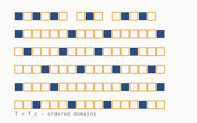
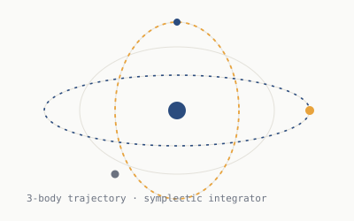
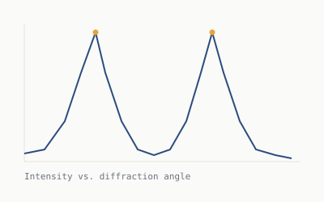
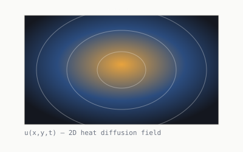

2D Ising Model Simulator
Monte Carlo simulation of ferromagnetic phase transitions using the Metropolis algorithm, with live plots of magnetization and energy as the system cools through the critical temperature.
View on GitHubSelected work
A mix of research code, simulations, and side projects — mostly Python and C++, with a few detours into web tools for visualizing results.

Monte Carlo simulation of ferromagnetic phase transitions using the Metropolis algorithm, with live plots of magnetization and energy as the system cools through the critical temperature.
View on GitHub
A symplectic-integrator simulation of gravitational n-body systems, rendered as an interactive trajectory viewer so you can drop in bodies and watch orbits evolve in real time.
View on GitHub
A lab tool that takes raw photodiode readings from a diffraction grating setup and fits them to expected interference patterns to back out wavelength with uncertainty bounds.

A finite-difference solver for the 2D heat equation with configurable boundary conditions, used to explore stability of explicit vs. implicit time-stepping schemes.
View on GitHub